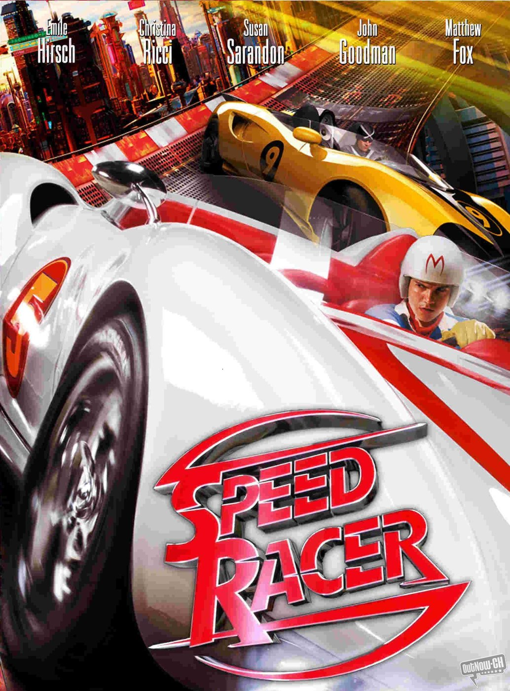

Meteoro idolatra a su hermano mayor, Rex Racer, quien fue un corredor legendario que murió trágicamente en un rally. Cuando un gran magnate de la industria automotriz, Royalton, le ofrece un lucrativo contrato, Meteoro lo rechaza. Esta decisión le revela un oscuro secreto: las carreras más importantes no se ganan con habilidad, sino que están manipuladas por empresarios corruptos y mafiosos que arreglan los resultados por dinero. Con el apoyo de su familia, su novia Trixie y el misterioso corredor enmascarado Racer X, Meteoro decide enfrentarse a Royalton. Juntos, se unen para participar en la peligrosa y mortal carrera Casa Cristo 5000 (la misma donde murió su hermano) con el objetivo de exponer la corrupción que amenaza el futuro del deporte.